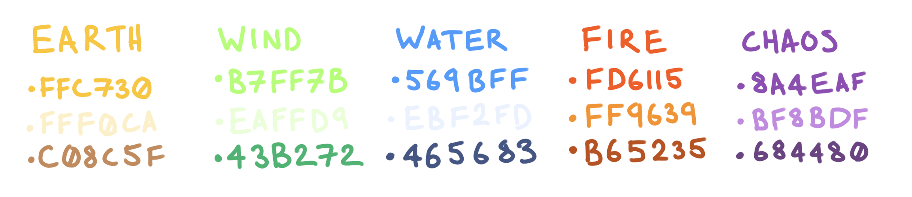

Playtest Feedback Form
Style Guide
Ragdoll Rumble is a party game with a fantasy setting. In the world Ragdoll Rumble takes place in, sorcery and magic is common place, with this in mind, the magic of this world still falls under a set of rules. This style guide aims to help define the rules of which the spells and sorcery of Ragdoll Rumble fall under.The Elements
The magic in this world can be categorised into 5 elements that make up the world. Earth, Water, Wind, Fire, and Chaos. These five elements are what form the fundamentals of magic, as well as the world itself. Because of this spells that are casted will behave in a way befitting of the element they are tied to, so you wont be seeing and solid walls of wind or a mountain suddenly turning to goop. The properties of each element are very important when creating a spell. Each element specialised in a certain behaviour and so spells of that element should stick to that behaviour no matter what. The effects are as follows:Elemental Properties Earth - Protection Wind - Mobility Water - Displacement Fire - Destruction Chaos - ???
Regarding Chaos, as its name suggests it is a wild and unpredictable element that is not fully understood to this day. Because of this spells under the category of Chaos preform things that don't adhere to the laws of the world. They can conjure objects or entities, transform one thing into another, or even bring a ragdoll to life…Colours of The World
Elements are identifiable via there own signature colours. Each element has a primary, secondary and tertiary colour that represents itself. These colours will be used whenever something that is associated with the element appears in the game, whether that is on the HUD, or in the world itself.  (Colours are listed from primary to tertiary from top to bottom)Elixirs & Spells
Elixirs
An elixir is a the essence of an element condensed down into a liquid form by a skilled sorcerer, allowing for anyone who wields its bottle to cast spells like a top tier wizard, regardless of their own magical talents. Despite being in a more, tangible form, elixirs are just like any other spell, and therefore must also adhere to the elemental system of the world. To reflect this, when brewed the colour of the elixir will directly reflect the element of which it belongs to.How to Create An Elixir:
In gameplay, an elixir can be split into 3 core parts:- An in-world 3D model
- A UI representation
- VFX of the spell's effect
Basic Spells
A basic spell is a spell that is at the foundational level of the element it belongs to. These spells are simple, basic even, so much so that your everyday magic wielder could cast it. These spells aren't the most powerful, world changing spells, but they are easy and versatile. Because of their simplicity wizards of a higher tier have been able to imbue the spell into small trinkets and objects. Just by having one of these imbued objects on your person would you allow you to wield these spells with the proficiency of a regular wizard.Building a Basic Spell
Unlike elixirs, basic spells do not have an in-world object that they are associated with as they are your player character's base abilities. Because of this, a basic spell is only made up of two core parts:- A UI representation
- VFX of the spell's effect